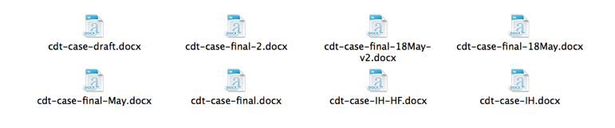
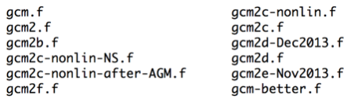
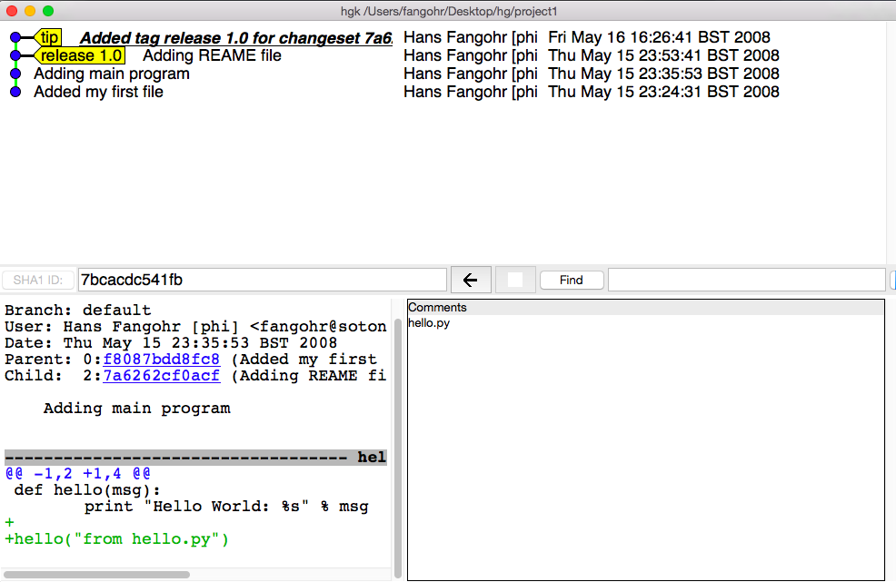
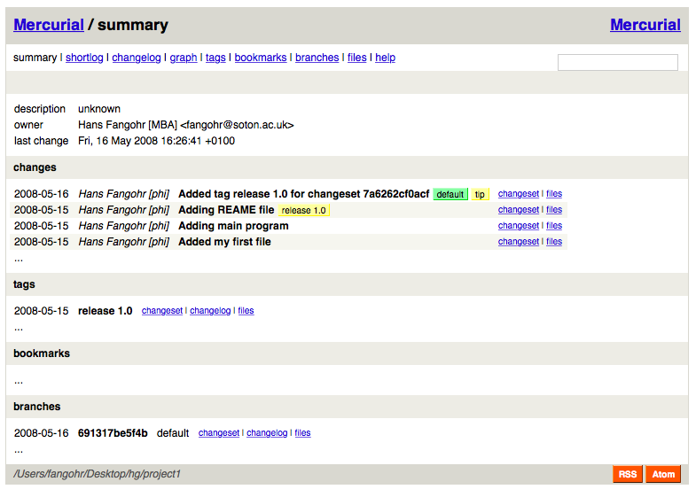
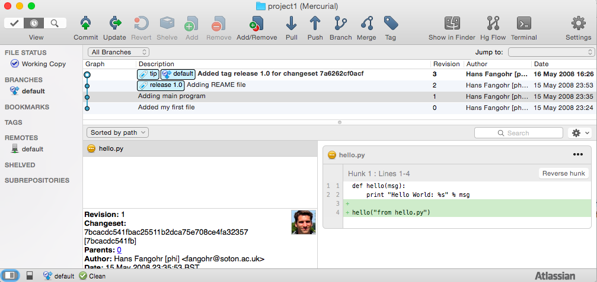
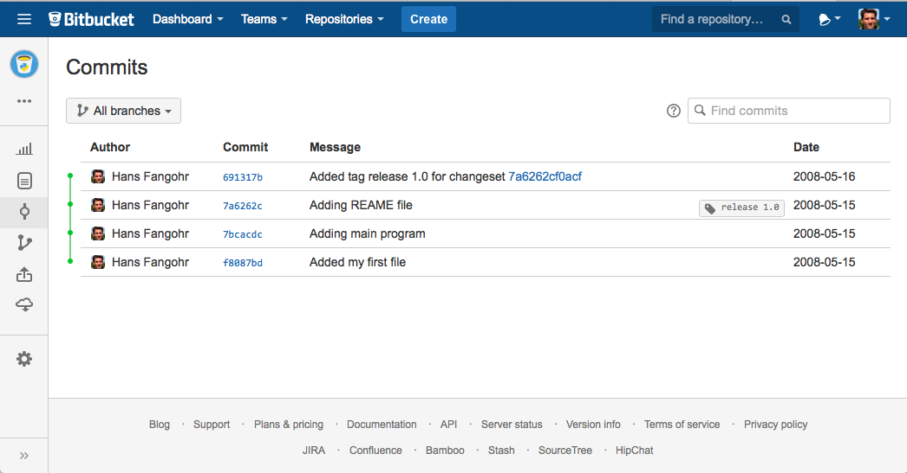

Have working mercurial installation. You can check for an existing installation using the command
hg --version, which should display some output starting with:
Mercurial Distributed SCM (version 3.1)
(see http://mercurial.selenic.com for more information)
If this is not working, you need to install Mercurial: see Installation
If you want to explore the example repository used in this session, you can download it from
project1.tar.gz. To unpack the archive, you can use tar xfvz project1.tar.gz.
However, the recommended exercise is to follow the examples in the notes below and create your own repository as you work through the material.
often we work on documents (or a set of files) for a long time
(days, weeks, months)
we (should) have backup copies in other places
need to know:
- regularly: what is the most recent version
- sometimes: how did the project look like some time ago (say two weeks)
Common approaches:
file-1.doc
file-2.doc
file-2a.doc
file-3.doc
...
or

or

We can do much better using version control tools.
- multiple people working on code
- may work on one file simultaneously
- need
- tracking of versions
- merging of changes from different people
- Impossible to do manually -> Need version control
will introduce idea of version control together with
Mercurial which is a particular version control package
Homepage: http://www.selenic.com/mercurial
Mercurial is abbreviated hg (from the chemical element)
| Repository: | something keeping track of all changes to the project for all the past (hidden in .hg)
You can think of this as a (hidden) collection of the files
file-1.doc, file-2.doc, file-3.doc, file-4.doc.
|
|---|
| Working copy: | the set (visible) files (in the working directory), i.e. one copy of
the project.
Typically, this will contain the most recent version
(i.e. file-4.doc)
|
|---|
Suppose we need to write a Python program in a directory project1
Create directory and change into directory:
$> mkdir project1
$> cd project1
$project1>
Suppose our first file is hello.py in the project1 directory:
def hello(msg):
print("Hello World: %s" % msg)
We can ask hg whether it knows about the file:
$project1> hg status hello.py
? hello.py
We could also have used:
$project1> hg status
? hello.py
and hg will report the status of all files in the directory.
? means: unknown.
Mercurial has a fairly comprehensive help command:
$> hg help
Or to get help for a particular command:
$> hg help add
hg add [OPTION]... [FILE]...
add the specified files on the next commit
Schedule files to be version controlled and added to the
repository.
The files will be added to the repository at the next
commit. To undo an add before that, see hg revert.
If no names are given, add all files in the repository.
...
Add this file to the repository (i.e. tell hg to track it):
$project1> hg add hello.py
$project1>
At this stage, hg knows that it should add the file. Let's check this (via the status command):
$project1> hg status
A hello.py
A stands for Added.
Commit changes (ask hg to take snapshot):
$project1> hg commit -m "Added my first file"
$project1>
Check status:
$project1> hg status
$project1>
no news is good news, i.e. all files in the directory are
up-to-date (=identical to last snap-shot)
Study history of repository (the log):
$project1> hg log
changeset: 0:f8087bdd8fc8
tag: tip
user: Hans Fangohr [phi] <fangohr@soton.ac.uk>
date: Thu May 15 23:24:31 2008 +0100
summary: Added my first file
extend programm hello.py to read:
def hello(msg):
print("Hello World: %s" % msg)
hello("from hello.py")
Has hg realised we have changed the file?:
$project1> hg status
M hello.py
Yes, M stands for Modified.
What is the difference (in comparison to the last snapshot):
$project1> hg diff
diff -r f8087bdd8fc8 hello.py
--- a/hello.py Thu May 15 23:24:31 2008 +0100
+++ b/hello.py Thu May 15 23:29:32 2008 +0100
@@ -1,2 +1,4 @@
def hello(msg):
print("Hello World: %s" % msg)
+
+hello("from hello.py")
Suppose we are happy with this change, and want to take a snap-shot: (i.e. commit the change):
$project1> hg commit -m "Adding main program"
$project1>
Check out the history of the project:
$project1> hg log
changeset: 1:7bcacdc541fb
tag: tip
user: Hans Fangohr [phi] <fangohr@soton.ac.uk>
date: Thu May 15 23:35:53 2008 +0100
summary: Adding main program
changeset: 0:f8087bdd8fc8
user: Hans Fangohr [phi] <fangohr@soton.ac.uk>
date: Thu May 15 23:24:31 2008 +0100
summary: Added my first file
We create a new file README.txt which contains this line:
The hello.py program prints a friendly message.
Let's check the status, add, commit and check:
$project1> hg status
? README.txt
$project1> hg add README.txt
$project1> hg status
A README.txt
$project1> hg commit -m "Adding RENAME file"
$project1> hg status
$project1>
Using the hg log command:
$project1> hg log
changeset: 2:7a6262cf0acf
tag: tip
user: Hans Fangohr [phi] <fangohr@soton.ac.uk>
date: Thu May 15 23:53:41 2008 +0100
summary: Adding REAME file
changeset: 1:7bcacdc541fb
user: Hans Fangohr [phi] <fangohr@soton.ac.uk>
date: Thu May 15 23:35:53 2008 +0100
summary: Adding main program
changeset: 0:f8087bdd8fc8
user: Hans Fangohr [phi] <fangohr@soton.ac.uk>
date: Thu May 15 23:24:31 2008 +0100
summary: Added my first file
The -v flag shows files affected by each changeset:
$project1> hg log -v
changeset: 3:691317be5f4b
tag: tip
user: Hans Fangohr [phi] <fangohr@soton.ac.uk>
date: Fri May 16 16:26:41 2008 +0100
files: .hgtags
description:
Added tag release 1.0 for changeset 7a6262cf0acf
changeset: 2:7a6262cf0acf
tag: release 1.0
user: Hans Fangohr [phi] <fangohr@soton.ac.uk>
date: Thu May 15 23:53:41 2008 +0100
files: README.txt
description:
Adding REAME file
changeset: 1:7bcacdc541fb
user: Hans Fangohr [phi] <fangohr@soton.ac.uk>
date: Thu May 15 23:35:53 2008 +0100
files: hello.py
description:
Adding main program
changeset: 0:f8087bdd8fc8
user: Hans Fangohr [phi] <fangohr@soton.ac.uk>
date: Thu May 15 23:24:31 2008 +0100
files: hello.py
description:
Added my first file
Graphical interface:
$project1> hg view

Using webserver:
$project1> hg serve
and point webbrowser to http://localhost:8000

Use hg glog (for graphlog):
$project1> hg glog
@ changeset: 3:691317be5f4b
| tag: tip
| user: Hans Fangohr [phi] <fangohr@soton.ac.uk>
| date: Fri May 16 16:26:41 2008 +0100
| summary: Added tag release 1.0 for changeset 7a6262cf0acf
|
o changeset: 2:7a6262cf0acf
| tag: release 1.0
| user: Hans Fangohr [phi] <fangohr@soton.ac.uk>
| date: Thu May 15 23:53:41 2008 +0100
| summary: Adding REAME file
|
o changeset: 1:7bcacdc541fb
| user: Hans Fangohr [phi] <fangohr@soton.ac.uk>
| date: Thu May 15 23:35:53 2008 +0100
| summary: Adding main program
|
o changeset: 0:f8087bdd8fc8
user: Hans Fangohr [phi] <fangohr@soton.ac.uk>
date: Thu May 15 23:24:31 2008 +0100
summary: Added my first file
Use graphical user interfaces (such as Sourcetree)

Use service such as bitbucket or github

$project1> hg blame hello.py
0: def hello(msg):
0: print "Hello World: %s" % msg
1:
1: hello("from hello.py")
$project1> hg blame -u hello.py
fangohr: def hello(msg):
fangohr: print("Hello World: %s" % msg)
fangohr:
fangohr: hello("from hello.py")
Commit messages should be used to explain what has been changed in this commit, or what this commit provides / fixes / etc. For example:
- "starting implementation of new feature X"
- "as used for figure 3 in Nature paper"
- "have added iterative method to solver suite"
- "implemented suggestion from examiner in transfer viva"
The purpose of them is to (help) find a particular version of the code later. The messages are not limited to one line but can be very long if desired.
While programming (or writing a report, creating a web page, etc), we
tend to follow this cycle:
- do the work (i.e. modify files)
- commit changes with commit message
- back to 1.
Only occasionally, we need to do special things:
- examine the history (partly shown)
- go back to an older snap shot (next topic)
update refers to the files in the working directory (not the
repository), and allows 'time travel'.
To go back to revision 0, use:
$project1> hg update -r 0
1 files updated, 0 files merged, 1 files removed, 0 files unresolved
(Similarly, can use hg update -r 1, hg update -r 2 etc)
What files are in the working directory?:
$project1> ls
hello.py
What is the content?:
$project1> cat hello.py
def hello(msg):
print "Hello World: %s" % msg
To check the version of the files in the working directory, use the parent command:
$project1> hg parent
changeset: 0:f8087bdd8fc8
user: Hans Fangohr [phi] <fangohr@soton.ac.uk>
date: Thu May 15 23:24:31 2008 +0100
summary: Added my first file
To go to the most recent version in the repository (the tip) use:
$project1> hg update tip
or simply hg update.
Can also request the latest snap shot taken before 23:50 on 15 May 2008:
$project1> hg update --date "<2008-05-15 23:45"
Found revision 1 from Thu May 15 23:35:53 2008 +0100
0 files updated, 0 files merged, 1 files removed, 0 files unresolved
Check status of working directory:
$project1> hg parents
changeset: 1:7bcacdc541fb
user: Hans Fangohr [phi] <fangohr@soton.ac.uk>
date: Thu May 15 23:35:53 2008 +0100
summary: Adding main program
Useful if you happen to know that at a certain date something worked.
The hg cat -r n FILE allows to send the FILE in revision n to the stdout:
$project1> hg cat -r 0 hello.py
def hello(msg):
print("Hello World: %s" % msg)
$project1> hg cat -r 1 hello.py
def hello(msg):
print("Hello World: %s" % msg)
hello("from hello.py")
This is useful to see (or retrieve and redirect into a file) an older version of one file.
The update command will update all the files in the working repository to version n and cannot operate on a single file.
Suppose we have released revision 2 as version 1.0 of the software, and we want to
Add a tag:
$project1> hg tag -r 2 "release 1.0"
the tags command lists all defined tags:
$project1> hg tags
tip 3:691317be5f4b
release 1.0 2:7a6262cf0acf
can also see tags in log:
$project1> hg log
changeset: 3:691317be5f4b
tag: tip
user: Hans Fangohr [phi] <fangohr@soton.ac.uk>
date: Fri May 16 16:26:41 2008 +0100
summary: Added tag release 1.0 for changeset 7a6262cf0acf
changeset: 2:7a6262cf0acf
tag: release 1.0
user: Hans Fangohr [phi] <fangohr@soton.ac.uk>
date: Thu May 15 23:53:41 2008 +0100
summary: Adding REAME file
changeset: 1:7bcacdc541fb
user: Hans Fangohr [phi] <fangohr@soton.ac.uk>
date: Thu May 15 23:35:53 2008 +0100
summary: Adding main program
changeset: 0:f8087bdd8fc8
user: Hans Fangohr [phi] <fangohr@soton.ac.uk>
date: Thu May 15 23:24:31 2008 +0100
summary: Added my first file
Can now use the tag "release 1.0" instead of the revision number if,
say, we need to go back to that version:
$project1> hg update -r "release 1.0"
You may want to t ag particular versions of your work,
i.e. use tags like:
- interim_report
- final_as_submitted
- has bug
- as-submitted-to-Nature
Caution!
If you use the push, pull or merge commands, the
integers may change. See Mercurial tutorial for details.
To remove a file from the repository (say README.txt), you can use:
$project1> hg remove README.txt
Mercurial will tag the file for removal, and will delete it with the
next commit.
Note that the history of the file is not changed: we can always go
back to earlier revisions and the file will be there.
You can easily rename a file with hg. Suppose we need to rename
README.txt to readme.txt:
$project1> hg rename README.txt readme.txt
This (i) renames the file in the working directory and (ii) include
the change in the repository the next time we commit.
- You could rename a file as follows (but we shouldn't!):
- copy README.txt to readme.txt without hg
- tell hg to remove README.txt from the repository and
- tell hg to add readme.txt.
This his two disadvantages: (i) hg cannot know that this is the
same file and (ii) this will take much more disk space than using hg
rename.
The whole repository lives in a hidden directory with name .hg.
(it is hidden due to the leading dot.
On Linux/Unix/Mac OS X, you can display hidden directories with the -a switch:
$project1> ls -a
.hg README.txt hello.py
Suppose you are working on file hello.py. You start with the most recent version from the repository:
$project1> hg update
You make some changes to hello.py, and then realise that your
changes were not useful, and you want to go back the last version
from the repository.
There are (at least) two options:
- You delete the file manually and run hg update.
- You use the revert command: hg revert hello.py.
If you have committed something that you didn't want to commit, you
can undo the last commit (but only the last commit!) with:
$project1> hg rollback
You can either
just copy the whole project1 folder (which includes the hidden .hg directory) to another place
or (recommended): you can ask hg to make the copy:
$project1> cd ..
$> hg clone project1 my-backup-project1
Now you have an identical copy of the repository in directory
my-backup-project1.
-> See also using multiple repositories (pull, push, merge)
Note: To propagate changes from the original repository (project1) to the cloned copy (my-backup-project), do this:
$> cd my-backup-project1
$my-backup-project1> hg pull
When working with several people, one can have multiple repositories
in different places:
- Developer A may be working on the graphical user interface while
developer B is improving the numerical part of the code.
- In a Group Design Project report student A might be working on the
introduction, student B on results chapter 1 and student C on the
appendix of a large (LaTeX) document.
Occasionally (maybe quite frequently), the changes in these
repositories (or some of these) need to be combined (merged)
We will cover this advanced topic only superficially for one
particular setup (with one central master repository).
There are many other ways in which (distributed) version control
systems can be used. See Mercurial tutorial for
details.
Create the master repository, say:
$> mkdir master
$> cd master
$master> hg init .
Add any files that you have already, and commit.
Now individuals can clone from the master to carry out their work:
$> hg clone master my-copy-A
$> cd my-copy-A
Do the work here, and and modify files, commit as many times as
you like (may need pull; see below).
When you have completed your work, commit everything and push
your changes to the master (may need pull first):
$my-copy-A> hg push
To import changes from the master repository (others could have
done some work in the mean time) into my-copy-A, use the pull
command:
$my-copy-A> hg commit #commit all our changes first
$my-copy-A> hg pull
This will update the repository (not the working directory). To
bring changes into the working directory, we have to update:
$my-copy-A> hg update
If there have been changes on files that we have worked on as well,
a merge has to take place (command is hg merge)
This is usually automatic and hg will tell us if
required.
Rarely, one needs to edit a file manually during the
merge.
After a merge, we need to commit, typically like this:
$my-copy-A> hg commit -m "merge"
Note that the extension hg fetch automates the pull, update, merge and commit if required sequence.
The cloning, pulling and pushing between repositories can happen:
- on the same file system/computer, where multiple repositories are hosted in different subdirectories
- between computers using either
- bitbucket and github offer webhosting of repositories.
This is an advanced topic (see Mercurial Tutorial).
- we tend to believe the 'results' or 'findings' of a research group
(or individual), if other individuals and groups can reproduce
them
- this implies that individuals should be able to reproduce all of
their (earlier) results
- if these results include computer simulations, then we need to know
- which version of the simulation programme/code was used
- what input parameters (configuration files?) were used
Important
When using computer simulations, we should use version control to
be able to reproduce any earlier results at any point in the
future.
hg add (add files)
hg commit (commit changes)
hg status (show modified/missing/added/removed files)
hg log (show log)
hg diff (show diff to version of working directory)
hg parents (show version of working directory)
hg update (updated working directory)
hg cat (send version of file to stdout)
hg clone (copy repository)
hg tag (add tag)
hg tags (list tags)
Most commands can be abbreviated, such as:
status -> st
commit -> ci
diff -> di
update -> up
rename -> mv
Read more about these topics in the (unofficial) manual at http://hgbook.red-bean.com
- keyword expansion
- sending emails when revisions are committed, or repositories pushed
- access control (beyond ssh)
On a Linux/Mac OS X user account, this is (an optional) file .hgrc
in the home directory:
[ui]
#tell Mercurial what user information to use in commit messages
username = Hans Fangohr [phi] <fangohr@soton.ac.uk>
[extensions]
#this enables the 'hg view' command
hgk=
hgext.graphlog=
hgext.fetch=
[web]
#this makes for a nicer layout of the web interface (which is started
#with 'hg serve'
style=gitweb
In a first approximation, git and mercurial provide very similar functionality.
- Nowadays, version control software (such as hg and git) is
- easy to install
- very easy to use (in single user mode), but sufficiently
sophisticated to support very complex projects
- well documented (start with Mercurial Tutorial and other links
on Mercurial home page).
- An effective way to:
- keep track of the history of a project,
- reliably retrieve earlier versions if required
- recover from errors (such as accidental deletion of files,
inability to retrieve working version)
- always find the most recent version of a document and
- have (versioned) backups